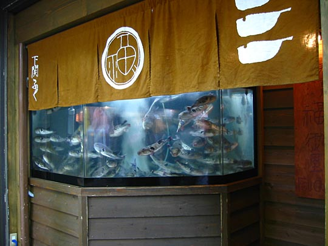
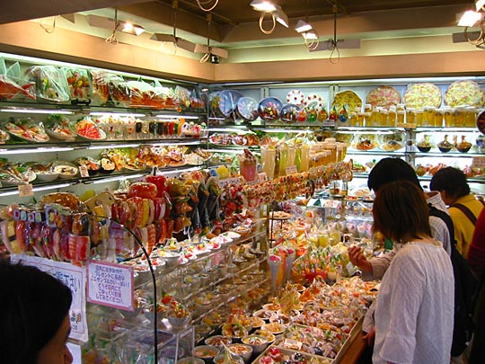

Photos from our second trip to Japan, 18 March–2 April 2005 are on Flickr
Japan, 18-28 April 2003
- Index
- Arrival, Day 1: Tsukiji Fish Market; Hama-Rikyu Gardens [1.66Mb]
- Day 1 (continued): DesignFesta [1.25Mb]
- Day 2: Meiji Shrine and inner garden; Harajuku; Nezu Institute; Aoyama cemetery [2.38Mb]
- Day 3: Ghibli Museum, Mitaka; Shinjuku [1.66Mb]
- Day 4: Hakone: Taisekan ryokan [1.81Mb]
- Day 5: Hakone: Taisekan; Hakone Museum of Art; ropeway to Owakudani; Lake Ashino-ko [1.93Mb]
- Day 6: Kamakura [4.37Mb]
- Day 7: Senso-ji temple; Asakusa; Joe [1.46Mb]
- Day 8: Koishikawa Korakuen garden; Seibu department store; Ginza [1.2Mb]
- Day 9: Shinjuku-gyoen gardens [2Mb]
- Day 9 (continued): Harajuku, Ueno Park and the Tokyo National Museum, Roppongi Hills [1.59Mb]
Friday 25 April: Asakusa — Senso-ji temple, traditional Tokyo; visited Joe
Bit more relaxed day — slept quite late, scaled back plans. Only did Asakusa, the erstwhile heart of Tokyo's nightlife, but now slightly seedy. Decided not to do Ueno park as well. Also phone arrangements with Yuzuru Miura (Joe), Yoko's friend, which ended up working out fine.
Poor start to the morning with a too-late breakfast at Mr Donut of all places, with crappy Western pop music playing. Senso-ji Temple, Tokyo's most sacred and spectacular temple, is also tourist mecca for Japanese tourists as well as foreigners. Street from Thunder Gate up to the temple crowded with Japanese tourists and school groups. One group of 4 schoolboys stopped me to practice their English — obviously a school assignment — consulting pre-written questions (What is your name? Where are you from? How long have you been in Tokyo? etc.) and frowning furiously. Carnivalesque atmosphere — which makes a pleasant change from the solemnity of Christianity, but also made us glad to have experienced the tranquility of the temples at Kamakura. Also one of the only places we saw in Tokyo with lots of feral pigeons. Many ancient gingko trees, big incense burners, enormous lanterns. Kelly got her fortune told — a bad one, which she neutralised by tying it to the nearby fence.
Shops on the way to Senso-ji
A traditional sembei-making shop (savoury rice crackers)

A particularly impressive fugu restaurant, with the acquarium full of live blowfish. I love the design on the awning
Senso-ji Temple
Tokyo's most sacred and spectacular temple
"Thunder Gate", with its massive lantern. And Japanese teenagers.
Already in the temple precincts, there's this street lined with shops, selling traditional and not-so-traditional touristy items
All kinds of things
Rice crackers of all shapes and sizes
Gojira and cohorts. Pretty damn expensive.
More lanterns, and another massive one under the structure. Got stopped by schoolkids practicing their English here.
Enormous lantern, and yet more teenaged louts. In the background, you can see the smoke of the incense burner.
The pagoda. There's a secret garden behind it, but alas, it was closed that day.
This is how you get your fortune told: You take a metal container, rattle it until a chopstick falls out of the little hole, and match up the character written on it with one of the little drawers against the wall (we needed assistance), from which you take your written fortune. On the left is a fence where you can tie unhappy ones, nullifying them, like this one:
No.15 BAD FORTUNE
Every year your servants will get fewer and fewer and you will be alone. Even if you stay in bed for a long while, you'll never get well.
It's too dangerous for you to bring the boat to the shore. Just like a dragon loses its treasure ball, you will lose your hope.
*Your wishes will not be realized. *A sick person will never recover. *The lost article will not be found. *The person you are waiting for will not come. *Building a new house and removal are not good. *Making a trip, marriage, employment are bad.
Buddha statue worn smooth by people's hands
Outside Senso-ji precincts, another small shrine. From the little babies, I'm guessing it's a shrine to Jiro.
Walked sad, seedy Asakusa streets. Saw many old Japanese couples, acting like tourists — reliving memories of Tokyo past? Then the Kappabashi-dori area of restaurant wholesalers — some shopping anxiety since I rather wanted to buy some of the plastic food displays. But the best models go for 4000-8000 Yen (20-50 Pounds) — which was too much.
Asakusa Rokku and Koppabashi-dori districts
Sleazy entertainment and wholesale restaurant supplies

Intersection in the Rokku district. Not exactly Shibuya.

Cinema poster
Street lined with restaurant supply shops. And lots of these little cartoony figurines above the doorways; couldn't figure out what they depict
Crockery store. Beautiful things!
A food store where Kelly bought lots of stuff, including wholesale bulk-bags of dried squid

A shop selling plastic food models. The craftsmanship in these things is astonishing. Anything from foaming glasses of beer to shiny sashimi to salads to curly noodles being lifted up by chopsticks. They also sell miniatures, obviously for souvenirs, including mobile-phone ornaments and keyrings (would you like an octopus tentacle on rice dangling from your keys?), but these aren't nearly as well-made as the proper ones, which are wrapped in plastic and you buy separate from the crockery they're in. Good ones were at least 4000 Yen, which was too steep for something that would just sit on the mantlepiece. But they're so cool, though!
Many local politicians on the campaign trail, cruising around in cars with broadcasting greetings non-stop through loudspeakers, or walking in procession with flags, shaking hands of passers-by.
Searched 30 minutes for Owariya soba restaurant — nearly in tears until staff at the tourist information centre explained for us, and a kindly old gentleman whom we asked for assistance on the sidewalk put on his reading glasses to read our guidebook, and then tell us we're standing right outside it! Nice food! Ten-Namban (hot) and Ten-Zairo (cold).

Soba noodles and giant tempura prawn at Owariya
Then back to Fukudaya. Napped and soaked in the onsen. Then walked to Joe's restaurant, Cento Cose. The only person we sort of know in Tokyo — a friend of a friend — and he turns out to be 10m walk from Fukudaya! How's that for coincidence? Very nice guy, very suave, exceptionally gracious for someone who doesn't know us from anywhere. Good conversation (we were there for 3.5 hours!) Huge meal. Sublime Thai food: Deep-fried prawn cakes in breadcrumbs. Fresh (uncooked) springrolls — very interesting! Cold glass noodle salad — nice, with tasty little dried Kamakura shrimp, but very chili-ish. Crab soup with enoki mushrooms. Huge platter of prawns in coconut sauce. Then a handmade coconut ice-cream.
Kelly and Joe
Along the walk from Fukudaya — highways stacked 3 levels high, and those overpasses are awesomely massive. Obviously earthquake-proof.
Next: Day 8: Koishikawa Korakuen garden; Seibu department store; Ginza